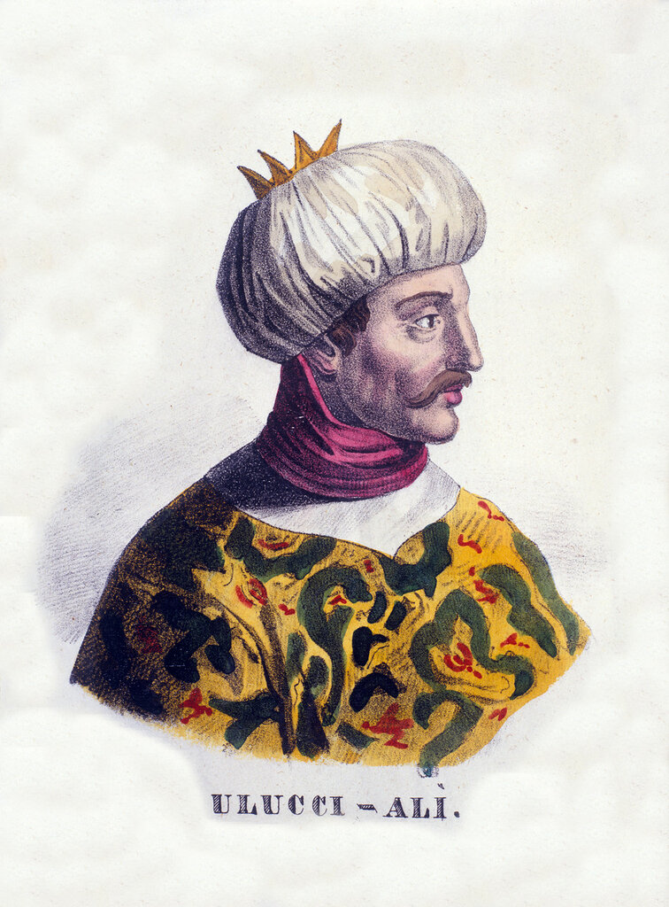
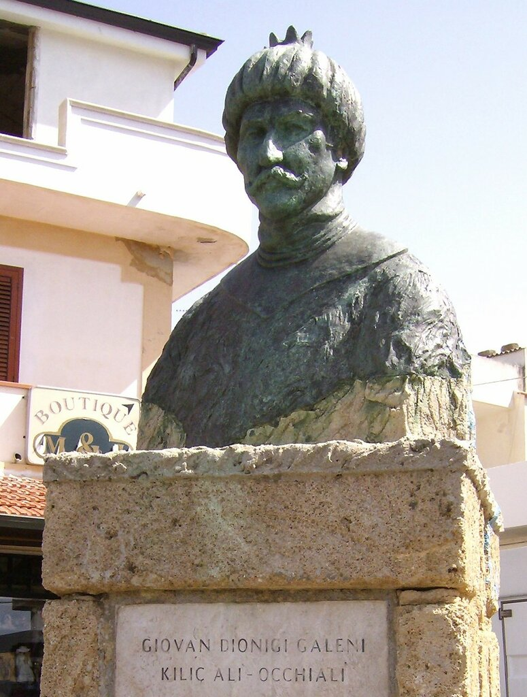
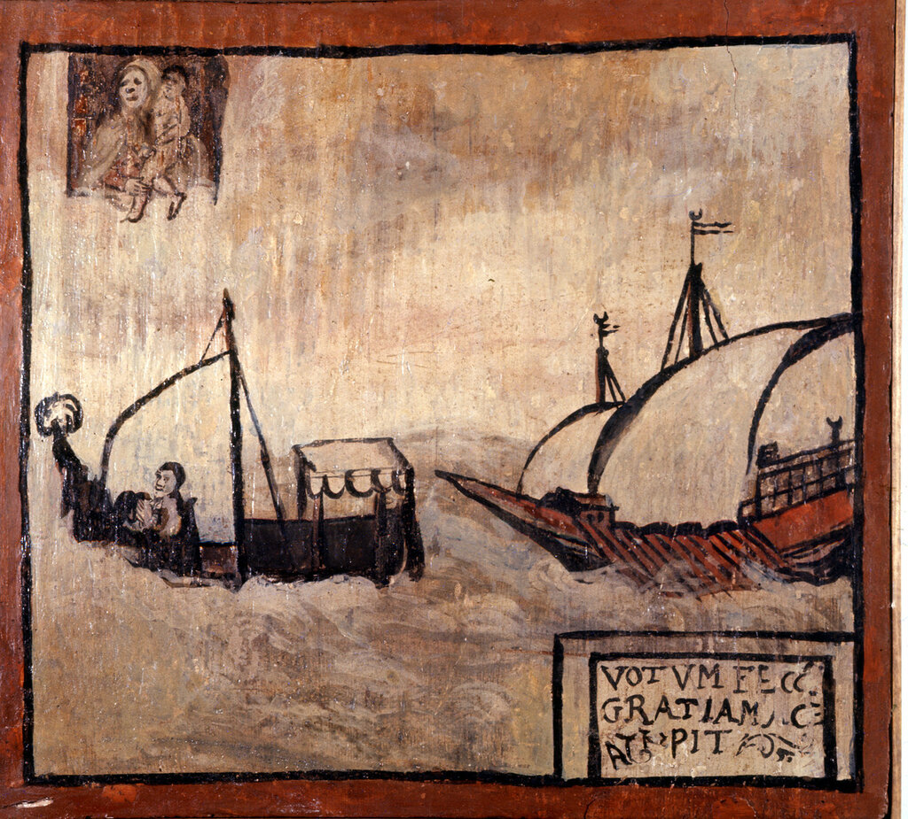

Улудж Али: до Лепанто
Этих каменных скатов
Мы боялись, когда
Варварийских пиратов
Здесь гнездились суда.
Н.Гумилев. Алжир и Тунис

(www.stilearte.it)
Итак, вернемся к командующему южным крылом турецкого флота в сражении при Лепанто Улудж Али-паше (по-турецки Uluç Ali Paşa). Мы уже несколько раз указывали, что его настоящее имя – Джованни Диониджи Галени, он был уроженцем городка Ле Кастелла в итальянской Калабрии.

В семнадцатилетнем возрасте его захватили в плен барбарийские пираты, после чего несколько лет юноша был галерным рабом – гребцом на турецкой галере.

Вотивное изображение в благодарность Мадонне за избавление христианского судна от барбарийских пиратов (www.stilearte.it)
Чтобы добиться освобождения, Джованни принял ислам, получив имя Улудж Али, и начал карьеру на кораблях флота Османской империи.
Происхождение его имени не вполне ясно. Итальянцы называли его, помимо Улудж Али, также Ulugh Ali, Euldj Ali, Lucciaili, Occhiali, Ucciali. Известный французский востоковед Вантюр де Паради (Venture de Paradis) в своей книге «Alger au XVIIIe siècle» пишет:
«On nomme aaldj علج un chrétien qui se fait turc et selami إسلامئ un juif qui se fait mahométan.»
(Имя aaldj علج давали христианину, который становился турком (мусульманином – g._g.), а selami إسلامئ – иудею, который становился магометанином).
(p.51)
Однако турецкий писатель Фуад Карим считает несколько иначе. По его мнению имя Улудж произносится в мусульманских странах Северной Африки как аалидж, что означает «иностранец» или «неверный». Однако туркам трудно произносить звук «айн», поэтому у них имя Аалидж превратилось в Улудж.
В принципе, я не вижу принципиальной разницы между этими точками зрения. Важно то, что и в первом, и во втором случаях признается, что Улудж Али был мухтеди, христианским ренегатом. А то ведь во многих турецких источниках, даже таких авторитетных, как первая современная турецкая энциклопедия, выходившая в 1890-х годах, Kamus-ul Alam , представляют его как «турка из Анатолии».
Сейчас итальянское происхождение Улудж Али не ставится под сомнение. Считается, что новое имя ему дал при обращении в ислам захвативший его в плен корсар Али Ахмед реис. Как и профессию, в которой он сделал быструю карьеру. В 1548 году, уже командуя корсарским галиотом, он присоединяется к Драгут реису и играет важную роль в захвате и обороне крепости Махдие в Тунисе. Проявив воинский талант в этом сражении, а также в захвате Триполи в 1551 году, Улудж обратил на себя внимание Драгута, который взял его с собой в Стамбул, где лично представил султану Сулейману. Султан принял его на службу в своем флоте, положив жалованье в 80 акса и пожаловав право нести кормовую латерну (фонарь) на его галере. Началась служба Улудж Али-паши на морских рубежах Османской империи у побережья Северной Африки. В войне за Джербу он уже командовал флотом, а после гибели Драгута при осаде Мальты в 1565 году был назначен бейлербеем Алжира.
Именно в эти годы Улудж Али становится мишенью для спецслужб испанского короля. Практически все командиры пиратских судов Барбарийского побережья Африки были целью специальных операций, проводимых разведкой Габсбургов, если же они к тому же являлись ренегатами – интерес к ним возрастал многократно. Опыт испанцев показывал, что смена религиозных убеждений не означала разрыв всех связей с прошлым, семейных и дружеских отношений, не вела к забвению родного языка. Даже если турок был сыном ренегата, никогда не бывавшем на своей родине, в интернациональном сообществе североафриканских портов он неизбежно оказывался в контакте со своими соплеменниками. В книге-справочнике об Алжире той поры (D.Haedo, Topografia e Historia General de Argel , Madrid, 1927, vol. I, pp. 52-3) можно прочитать, что там проживали представители 52-х национальностей, от русских до датчан и от абиссинцев до индусов.
Именно эта ностальгия, эти связи и становились в первую очередь объектом разработки со стороны спецслужб. Нам известны попытки агентов испанской разведки вступить в переговоры с несколькими видными корсарами с целью их последующей вербовки. Такие подходы были сделаны к Хайреддину Барбароссе в конце 1530-х и начале 1540-х годов (хотя он и родился мусульманином), к другим правителям Алжира (сардинский ренегат Хасан Ага в 1535-1544 гг., сын ренегата Мехмет-паша в 1567-1568 гг.), а также к Адмиралам флота Хасану Венециано (венецианский ренегат) и Синан-паше (генуэзский ренегат). И хотя в указанных случаях тайные уговоры испанцев не увенчались успехом, испанская разведка продолжала тратить время и деньги на этот вид своей деятельности.
Первый подход разведки Габсбургов к Улудж Али был сделан, как представляется, в 1667 году, в бытность его правителем Триполи. Один из заместителей Улудж Али, ренегат из тосканской Лукки Мурад Ага, вошел в контакт с агентами испанской разведки Alferez Francisco de Orejon и Matheo Pozo с предложением убить Улуджа, после чего передать власть над Триполи Габсбургам. Суть предоженного плана была такова: Orejon и Pozo с 20-25 воинами тайно подойдут к стенам Триполи, а Мурат известными ему путями проведет заговорщиков внутрь крепости, которую они с помощью местных христиан и захватят. Успех был гарантирован, полагал Мурад, так как в Триполи осталось только 50 османских гвардейцев, остальные ушли для подавления бунта местных берберских племен. Кроме того, Мурад утверждал, что османы лишь недавно (в 1551 году) отвоевали город у мальтийских рыцарей и поэтому среди его населения осталось много сторонников христиан.
Мы не знаем, была ли предпринята попытка осуществления этого плана. Скорее всего нет, так как недавний неудачный опыт османов (на Джербе и на Мальте) показал, что недавняя смена власти на территории еще не является гарантией того, что на ней осталось много приверженцев старых хозяев. Во всяком случае известно, что Улудж Али остался жив, а имя Мурад Ага появлялось в испанских документах и спустя восемь лет, т.е. нет никаких оснований предполагать, что он погиб в результате неудачной операции испанской разведки.
Продолжим в следующий раз.